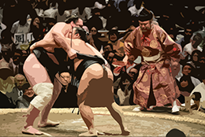

R Stats Bootcamp 06
Data frames
R Stats Bootcamp

Data subsetting
With a good set of moves for manipulating data, you can overpower any dataset no matter how powerful they are. Then, you have strong data Sumo.
Objectives
-Indexing concept
-Using which() and subsetting
-Selection on data.frame objects
-Using aggregate()
Indexing concept
Vectors, Matrices and arrays. Oh my!
Think of houses on a street
Each street has an address…
Indexing concept
Indexing
my_vector <- c(11.3, 11.2, 10.4, 10.4, 8.7, 10.8, 10.5, 10.3, 9.7, 11.2)
my_vectorIndexing concept
Vectors
my_vector
my_vector[ ]
my_vector[ 1:10] Indexing concept
Matrices
my_matrix <- matrix(data = c(2,3,4,5,6,6,6,6), nrow = 2, byrow = T)Using which() and subsetting
A way to exploit indices
which(vector_a > 5)Selection on data.frame objects
Slice your data
data(OrchardSprays)
OrchardSprays$treatment == "D" Using aggregate()
Very useful to summarize your data
# NB use of list() and naming it "treatment"
aggregate(x = OrchardSprays$decrease, by = list(treatment = OrchardSprays$treatment), FUN = mean)